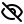

Warning: Possible Phishing
Warning: Possible Phishing
You may be at a fake site that is trying to steal your password. You previously used the nicknameguru for
alantheguru.alanhkarp.comThe domain asking for your password is
alantheguru.allanhkarp.comCheck the domain name carefully; it may not be for your account. You can check for known bad web pages at ScamAdvisor or other sites that check for phishing.
It is common to see different domain names for the same account login. You may seelogin.example.com andwww.example.com for the same account atexample.com. Just make sure you recognize the domain name.
You may have accidentally reused a nickname. In that case, you can just pick a different one.
Related Domain Name
You used the nicknameMyCollege for the account with domain names ending inmycollege.edu.
Isalice.mycollege.edu for the same account?
Change Password
You can change your password for all login pages ending in alanhkarp.com by providing a new account nickname.
The domain name is for a different account.
Warning: Page Not Secure
The connection to this page is not secure. Are you sure you want to enter your super password?
Warning: No Password Fields
SitePassword did not find any password fields on this page. Try reloading the page. If that doesn't work, click the Copy icon in the account password field to put it on the clipboard.
Forget Enabled
Are you sure you want to delete the settings for these domain names?
You can change your mind,
or permanently forget the settings for the listed domain names. This action cannot be undone.
Warning: No Password
SitePassword can't compute a password with these settings. You either need to enable some characters, increase the pasword length, or reduce the number of special characters you're asking for. If that doesn't work, try another nickname for the site.
Warning: Multiple Passwords
There is more than one password field on this page. You can dbl-click on the password field or click the Copy icon in the site password field to put it on the clipboard. When you are done pasting your password, come back here and click the Clear Clipboard button.
Domain Name Help
The domain name is associated with your settings for this account. It is also the name of a bookmark in the SitePasswordData bookmark folder. That's the bookmark you can use to get your settings when you're on a machine that doesn't have the SitePassword extension installed.
Super Password Help
You should choose a strong super password, one with lots of characters that include upper and lower case letters, numbers, and special characters. Just make sure it's something you won't forget. SitePassword can't help you if you do.
Nickname Help
Your nickname is the way you refer to this account. It should be easy to remember, such as 'amazon' for amazon.com, but it doesn't have to be that simple. You can change the password for an account by changing the nickname. That's useful if you have to change your password periodically.
User Name Help
Your user name is the name you use to log in to the account. It is associated with the nickname for the account and is used to calculate your account password. That means you can only have a single user name for a given nickname. If you want to use different user names for the same site, follow the instructions for Shared Machines.
Account Password Help
SitePassword uses your super password, nickname for the account, and your user name for the account along with the additional settings to calculate this password for the account.
If the password field on the login form doesn't say Click here for password, you can use the Copy option on the menu to put this password on the clipboard.
What is SitePassword?
SitePassword is a password manager that calculates your passwords from a super password and a per account nickname and username. It also allows you to specify a password when you don't want to use the computed one.
Overview
It's too hard for you to remember a strong password for every account you use. Password managers take care of this problem for you. Most of them store your passwords in encrypted form, either on your machine or in the cloud.
SitePassword is different. Instead of storing your passwords, it calculates them from a single super password and your nickname and user name for the account. That means you can usually get your password if you remember those three things. (Some web pages require additional settings.) SitePassword automatically saves your settings, so you don't have to remember them.
The icon opens these instructions, and the icon closes them.
Using the Extension
After you install the Chrome extension and visit a page with a
login form, you'll see that the password field tells you to
Click SitePassword. When you click on the SitePassword
icon
 , you'll see a form with the domain name field filled in.
Enter your super password, an easy to remember nickname for the
account, and your user name for the account. You will see your
username being filled into the login form and your site password being calculated as you type.
, you'll see a form with the domain name field filled in.
Enter your super password, an easy to remember nickname for the
account, and your user name for the account. You will see your
username being filled into the login form and your site password being calculated as you type.
Mouse over to the login form's password field, which now should tell you to Click here for password. Click, and your password gets filled in. When you return to the same web page on any machine that you synchronize bookmarks with and that has the extenstion installed, you'll see your user name filled in and instructions to Click here for password. Click, and your password gets filled in.
The Domain Name
The domain name is associated with the settings for this account. It is also the name of a bookmark in the SitePasswordData bookmark folder. That's the bookmark you can use to get your settings when you're on a machine that doesn't have the SitePassword extension installed.
You may have more than one domain name for a given account because some web sites use more than one domain name for logging into that account. You'll get the same password for all of the domain names because they are all associated with the same nickname.
Your Super Password
You should choose a strong super password, one with upper and lower case letters, numbers, and special characters. You can also use a passphrase that's either randomly generated or that's meaningful to you. The stronger the better.
The reason is simple. A bad guy who knows one site password and can guess your nickname and user name for that account can start guessing super passwords. You want to make that job has hard as you can.
You can protect yourself further by using different super passwords for different kinds of accounts. You could have one that you use for banking, another for subscriptions, and a third for sites you find sketchy.
SitePassword doesn't prevent you from using a weak super password, but it does warn you. There is a strength indicator directly above the super password field. It uses a meter and color to let you know how strong your super password is. The tooltip tells you how long it would take a determined adversary to guess your super password.
You'll notice that your super password is not usually marked Strong until it is longer than an account password marked Strong. That's because the super password is something you can remember, while the account password is effectively a random string of characters, which is less guessable.
You will have to enter your super password each time you start your browser. That's because SitePassword never stores your super password; it only remembers it for the duration of your browser session.
SitePassword cannot retrieve your super password. You should make sure it's something you won't easily forget. You might even want to write it down and keep the copy in a secure place.
Your Account Nickname
You refer to an account by assigning it a nickname that should be easy to remember, such as 'amazon' for amazon.com, but it doesn't have to be that simple. For example, you might want to append the year if you must change your password annually.
Your settings are associated with the account nickname. If you change one of the settings, that change will apply for all domain names associated with that account. If you change a nickname, all domain names associated with the old nickname will be associated with the new one.
You change an account password by changing the nickname. All your settings will then be associated with the new nickname.
Your User Name
Your user name is the name you use to log in to the account. It is associated with the nickname for the account and is used to calculate your account password. That means you can only have a single user name for a given nickname. If you want to use different user names for the same site, follow the instructions for Shared Machines.
SitePassword will attempt to fill in the user name field of a login form. If you don't see it, one of a few things happened.
- You never provided your settings for this domain name.
- This is the first time you've used SitePassword for this account.
- This is a different domain name for logging into the same account.
- You are at a fake site that is trying to steal your password.
- SitePassword incorrectly guessed the location of the user name field.
- SitePassword couldn't find the user name field.
- There is more than one non-password input field on the page.
In the last three cases, your can double click where you want your user name to go. If that doesn't work, you'll have to fill in your user name manually, which you can do by typing it in or copying it to the clipboard using the icon in the user name field.
Some sites make you fill in your user name manually before they show you the password field. In those cases, SitePassword can usually fill in the field if you dbl-click on it.
Your Account Password
SitePassword uses your super password, nickname for the site, and your user name for the site along with the additional settings to calculate your password for the account. Most of the time you only need to click on the password field of the login form to get your password.
Sometimes there is more than one field of type password on the page, say for the answer to a security question. In that case, you can dbl-click on the password field you want to fill in or paste your password from the clipboard.
When the generated password can't be used, say if you've been given one that you're not allowed to change, SitePassword can remember one you provide, as explained in Providing a Password.
Short account passwords and those you create yourself might be weak. SitePassword uses a strength meter that appears above your accout password to tell you how strong it is. The meter's tooltip tells you how long it would take a determined adversary to guess it.
You can also get your passwords without the extension. Go to https://sitepassword.info and fill in the form.
Providing a Password
Unlike most password managers that calculate your password, SitePassword gives you the option to provide your own. This is useful if you have a password that you can't change, such as one provided by your employer. You can also use this option if SitePassword can't compute a password acceptable by the site.
The password you provide is encrypted with the computed account password as a key. That means you must fill in the form before entering your password. After you fill in the form, open the settings and check the Provide your own account password check box. You'll then be able to enter your password into the account password field.
Input Field Menus
Each of the input fields has a menu that shows up when you mouse over (or tap on a touchscreen) the 3 dots () in the right side of the field. Each field has a particular set of menu items. If an icon is grayed out, that function is not available for that field. For example, you can't show your super password if the field is empty.
Every field has a help option, which provides a brief summary of the information provided in these Instructions.
The domain name, nickname, and user name fields have a Forget option. For example, if you click this icon in the account nickname field, you will be given the opportunity to permanently forget the settings for all domain names associated with that account nickname.
The user name and account password fields have a Copy option, which copies the contents of the field to the clipboard.
Although you can change your account password by editing the nickname, the account nickname and account password fields have a Change Password option.
 The super and account password fields give you the option of showing or hiding the contents of the field.
Additional Settings
The settings panel is divided
into three sections. The first section is about your super and account passwords.
The second section controls how SitePassword computes your account password.
The third section lets you download your settings and export your passwords.
Click on the
 icon to open the settings panel and the
icon to close it.
icon to open the settings panel and the
icon to close it.
The top section of the settings panel has three settings related to your super and account passwords. SitePassword allows you to provide your own password as explained in Providing a Password,
You usually leave your super password filled in for the entire browser session, but you might not want to do that on a shared machine. Checking the Clear super password on use means don't have to remember to clear it.
Your account password is not hidden by default. Surprisingly, people develop the ability to recognize their account passwords, allowing them detect typos when re-entering their super passwords. Check the Hide account password by default button to hide it.
How SitePassword uses these settings to compute your account password is explained in Computing an Acceptable Password.
The Download site data button is explained in Downloading Your Settings, and the Export passwords button, in Exporting Your Passwords.
Computing an acceptable password
Some web sites have strict password rules, how long it must be, if it must contain upper case or lower case letters, numbers, or special characters, including restrictions on which special characters are allowed.
SitePassword can calculate a password that is acceptable to most
sites with the default settings. You can change these settings
if you run into a site that doesn't accept the
calculated password. Click
and change the appropriate menu entries. SitePassword
was tested on hundreds of web sites to make sure it can almost always
compute a valid password.
Although these settings produce valid passwords for most sites, you might feel more comfortable generating stronger account passwords by making them longer or by including special characters. Click Save as default to make these settings the default for all new accounts.
Changing an Account Password
Some sites make you change your password periodically. SitePassword makes that easy. Just change your nickname for the account. For example, if your current nickname is MyBank1, and they make you change your password, you could change the nickname to MyBank2. Your new account password will be completely different from the old one.
If you forget this trick for changing your account password, you can open the menu for the nickname or account password field and click the account icon . You will see a change password form.
Using the Clipboard
There are two times when you won't be able to fill in your password in the login form by clicking on it.
The first is when SitePassword can't find the password field. The second is when there
is more than one password field on the page. In most cases, you can dbl-click. If that
doesn't work, you can copy your password to the clipboard. Click on the SitePassword icon
and copy your account password to the clipboard by clicking on
.
Leaving your site password on the clipboard for any length of time can be dangerous. SitePassword will alert you to this danger by changing its icon to when you use the clipboard icon. You can always clear the clipbord and reset the warning by using the SitePassword Clear Clipboard button or by copying something else to the clipboard. (These steps only clear the top item if the clipboard provides a stack of items.)
Phishing Warning
SitePassword includes an antiphishing feature. If you try to use the same nickname for another domain name, you will get a big, scary warning. It's telling you that you may be at a site spoofing the one you think you are at.
Unfortunately, you will also see this warning when you are not being tricked. Many websites have several different login pages for the same account. So, when you see the warning, check the domain name in the warning message to make sure it's a login page for the account you think it is.
If a site uses more than two domain names for logging into your account, you will see a less scary warning after the first one. It's telling you that the new domain name has the same suffix as domain names you said belong to this account.
You still need to be careful. Some domains provide subdomains for different services. For example, a college might host sites for students. You wouldn't want evilstudent.mycollege.edu to have your password for mycollege.edu.
Synchronizing across Your Machines
If you go to the same login page on a different machine that you synchronize bookmarks with, you'll see your user name for the account filled in for you. That's because the extension stores your settings in a bookmark folder called SitePasswordData. The extension uses the bookmark named CommonSettings for its own use. The bookmarks with domain names for titles can be used at https://sitepassword.info .
You must turn on synchronization in your browser to use this feature. If your SitePasswordData bookmarks folder is not synchonizing across your machines, follow the instructions for your browser to turn on synchronization for it.
Sites that Use the Same Password
Some accounts are used for multiple sites. For example, Hulu, Disney+, and ESPN+ all use the same user name and password. SitePassword can handle these sites by using the same nickname for the account on those sites.
You don't have to do anything special to use this feature. Once you've set up an account on one site, those settings will be used for all the other sites that use the same user name and password. So, set up Hulu, and Disney+ and ESPN+ will work automatically.
Shared Machines
Many households have one machine shared by everybody. It's likely that everyone uses the same user name and password for certain accounts, such as streaming services. It's also likely that those people use their individual user names and passwords for other accounts, such as social media.
SitePassword accomodates those uses with a feature provided by your browser called profiles. Simply create one profile for the shared account and one for each individual.
Downloading Your Settings
There is a Download Site Data button at the bottom of
the popup window after you click
.
Clicking this button lets you save your settings in a file you
can reference if you need to look them up. All settings created on machines
you synchronize bookmarks with are included.
Exporting Your Passwords
There may come a time when you want to use a different password manager.
In that case you can use the Export passwords button at the bottom of
the popup window after you click
.
Clicking this button creates a file with your passwords. You can see a readable form
of the data in the file by opening it in a spreadsheet.
You'll have to export to a separate file for each super password you use. Since SitePassword doesn't track your super passwords, it doesn't know which one goes with which domain. As a result each file will have a account password for every domain name in your SitePasswordData bookmarks folder. Only the domains associated with that super password will have the correct account password.
Be very careful with this file. Completely delete it from your machine, including emptying the trash, after you use it. If you don't, anyone who gets access to your machine can get your passwords.
The Extension and the Web Page
There will be times when you are on a device that doesn't have SitePassword installed, such as at a friend's house or on your mobile device. You can still get your passwords by going to https://sitepassword.info or the page on Github.
If you have synched your bookmarks to the device you are using, you can get your settings for the site by clicking on the appropriate bookmark to open the SitePassword web page, or you can paste the appropriate bookmark into the form if the page is already open.
See the instructions on the https://sitepassword.info web page for more information.
Browser Autofill
The autofill feature of your browser can interfere with SitePassword. You should turn it off following the instructions for your browser.
Source Code
If you are worried that SitePassword might go away, you can download the source code for the extension from the SitePassword project and that of the web page version from the SitePasswordWeb project. (For historical reasons, these are separate projects with a lot of duplicated code.)
Developers
The SitePassword extension can be installed for Firefox most Chromium browsers using the code here. (Testing is sparse on Firefox.) Simply rename the manifestFirefox.json file to manifest.json, and install the extension using the mechanism provided by your browser.
You may find a need to debug the extension. The service worker, bg.js, and the content script, findpw.js, work normally, but on the Chrome browser the popup, ssp.js, won't stop at breakpoints hit early in its startup. Setting the constant debugMode = true in ssp.js will make the popup stop at a debugger statement early in the load process. This setting also stops the popup from closing automatically when you mouse out of it. This mode also uses a different bookmarks file, allowing you to debug without risking your real bookmarks.
A number of tests are included with the distribution. In keeping with the philosophy of avoiding dependencies, the tests don't use any frameworks. To run the tests, edit bg.js and set the constant testMode = true. Then reload the extension. A page will open in a new window. Right click on the SitePassword icon and inspect the popup. Test results appear on the console.
You can set demoMode = true to use a separate set of bookmarks for demos.
Voluntary Payment
If you like SitePassword, please make a contribution to the Nancy Lee Hurtt '70 Maryland Promise Scholarship or your favorite charity.
Credits
- Alan Karp is the princple culprit. He stared with a very simple password calculator in 2002 that he turned into a Chrome extension in 2012. What you see today is the result of many improvements over the years, a lot of them suggested by the other contributors. Don't blame anyone else for bugs or usablity problems, but do credit them with the improvements they suggested. Please send any feedback to alanhkarp@gmail.com.
- Douglas Crockford provided useful suggestions for improvements, many of which were resisted but make SitePassword much better, both in terms of functionality and usability. Two features stand out: the ability to provide your own account password and the Forget menu option. The look and feel is much improved due to Doug's constant nitpicking of seeminly minor details. It's what takes a tool from "Meh" to "Yeah." That kind of feedback is almost impossible to get even if you offer to pay. Getting that kind of feedback for free is rare.
- Dale Schumacker wrote most of the code for https://sitepassword.info and made many useful suggestions. His code has been changed enough that he is not responsible for any issues, but he deserves kudos for its overall design. As an early user of SitePassword, Dale provide critical feedback.
- Michael Josefik provided the professional design for this web page. He showed remarkable patience as his ideas were resisted but then implemented when he was proven right.
- Important security improvements came from the people at the Stanford Security Lunch. They did not do anything approaching a security review and are not responsible for any vulnerabilities.
Additional Settings